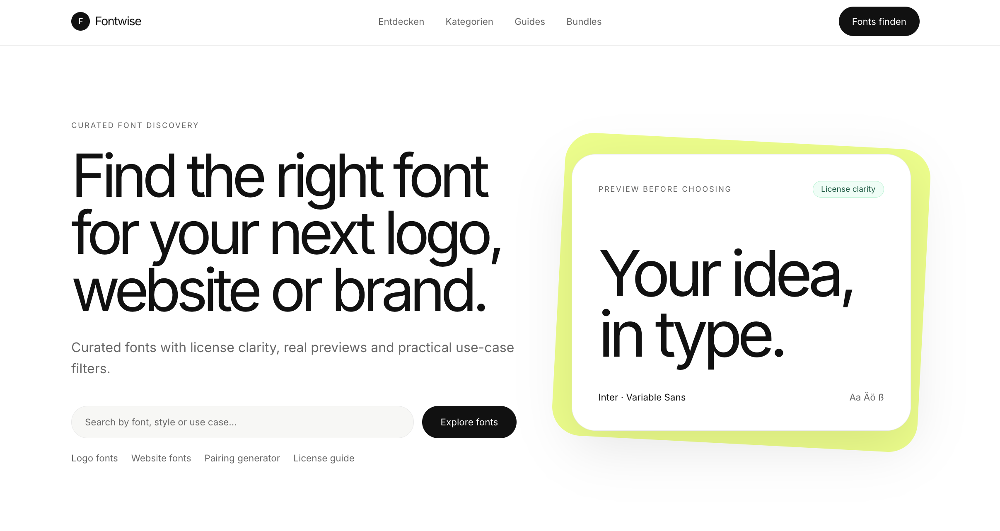

GREATER LABS · WIEN
Fontwise.
Einblick ins Projekt.
Eine Plattform zur Entdeckung und Kombination von Schriftarten. Suche, Vorschauen und strukturierte Informationen unterstützen die Auswahl für ein konkretes Designprojekt.
Projekt besprechen
Die Aufgabe.
Schriftarten sollen vor der Auswahl in einem sinnvollen Kontext vergleichbar sein. Dafür führt Fontwise Vorschauen, Filter, Lizenzinformationen und kuratierte Kombinationen in einer Oberfläche zusammen.
Die Umsetzung.
Die Plattform nutzt lokale JSON-Daten für den Font-Katalog. Dynamische Detailseiten ergänzen die Suche um Mockups, eine Lizenzmatrix und ähnliche Schriftarten. Lokal gehostete WOFF2-Dateien ermöglichen die Schriftvorschau. Zum dokumentierten technischen Umfang gehören TypeScript, JSON und WOFF2.
Inhalte und Auffindbarkeit.
SEO-Landingpages und strukturierte Daten gehören zur Umsetzung. Sie ergänzen die interaktive Suche um eigene Einstiege für Inhalte. Damit beschränkt sich das Produkt nicht auf eine einzige Suchoberfläche.
Das Ergebnis.
Entstanden ist eine Webplattform mit Fontsuche, Live-Vorschauen, Detailseiten und kuratierten Font-Pairings. Der Projektumfang verbindet Datenstruktur, Frontend und technische SEO-Grundlagen.
Projekt entdecken.
Live ansehen ↗ Mehr zur passenden Leistung →Was möchtest du umsetzen?
Eine kurze Beschreibung der Aufgabe, des bestehenden Systems und des Zeitrahmens reicht für den ersten Austausch.
Projekt anfragen